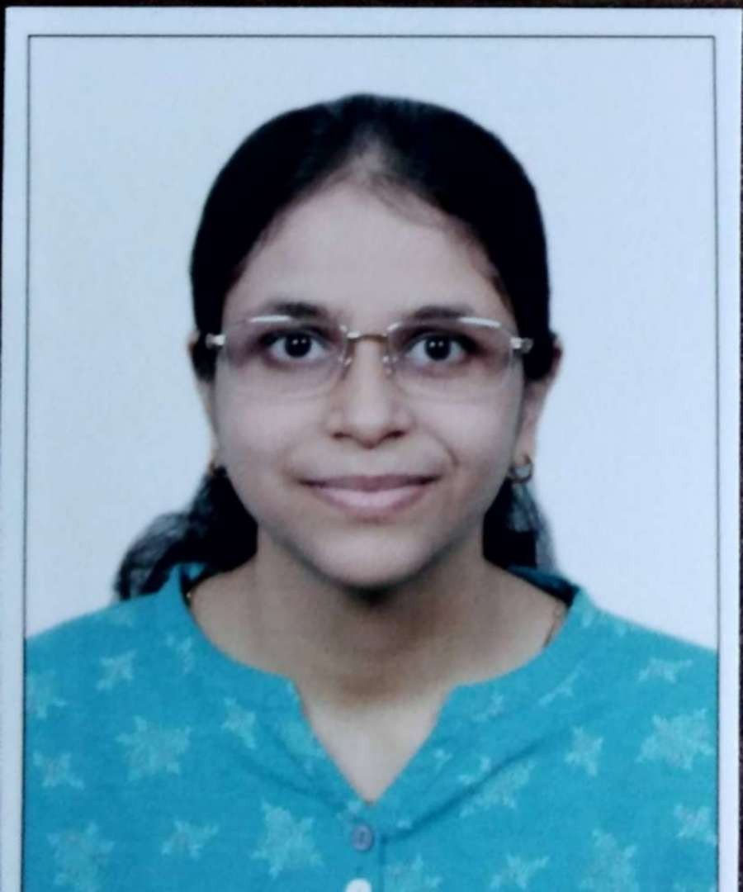

Tic Tac Toe
Game using HTML, CSS, and JavaScript Tic-Tac-Toe Game
Aspiring Full Stack Developer | Experienced in Big Data Technologies | Passionate About Innovation and Continuous Learning

I am Niyati Bhatkal, a versatile software developer with expertise in full-stack development and big data engineering. I bring hands-on experience in technologies like HTML, CSS, JavaScript, Python, SQL, ASP.NET, and Tableau. My career includes impactful roles at IBM India Pvt. Ltd. as a Big Data Engineer and Bharat Electronics Limited, where I combined my technical expertise with problem-solving skills to deliver value. Having recently completed a software pro-degree course from Laqshya, I am well-equipped to contribute to innovative projects. I am passionate about learning, building scalable solutions, and collaborating with teams to make a difference.
Game using HTML, CSS, and JavaScript Tic-Tac-Toe Game
Web application using ASP.NET for managing student, faculty, course, attendance, and result records efficiently View on GitHub
A JSP-based web application that enables users to book rooms and admins to manage room availability, user registrations, and bookings View on GitHub
enables user login, session management, and displays available books. View on GitHub
Associate System Engineer (Aug 2021 - Sep 2022)
Trainee Engineer (Apr 2023 - Sep 2023)
Bachelor of Technology in Electronics and Communication Engineering (Aug 2016 - May 2020)
Secured: 72.6% | CGPA: 8.14
HSC (Maharashtra Board) (Jun 2015 - Feb 2016)
Secured: 78.46%
SSC (Maharashtra Board) (Jun 2013 - Mar 2014)
Secured: 85.2%
Email: njbhatkal12@gmail.com
Phone: 8928420776
GitHub: Niyati12-eng